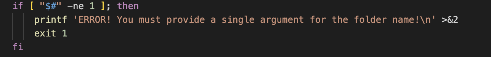
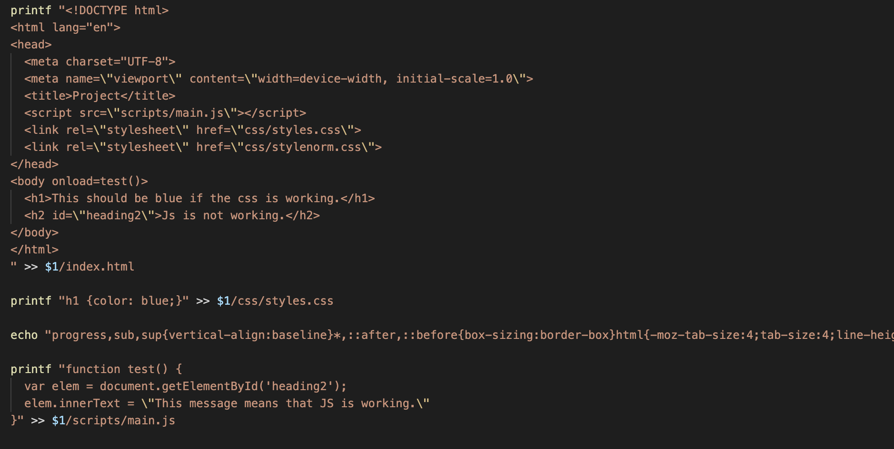

Written January 2024
Code Overview
For this project, I wanted to create a script that I could run whenever I wanted to begin a new project that would allow me to quickly be prepared, without the need to repeat the proecess of creating files and folders.
Firstly, we check if the user input a string parameter for the project name when running the script. If not then we print out a reminder of how to use the script and exit with an error.

Next, we use the two commands mkdir and touch -
mkdir -p pathway/
touch pathway/file.extension
to create the needed pathways and files for our project base.

Lastly, we use some printf and echo commands to write out to files. We write out some basic html, css, and js just to make sure everything works so that we don't need to check anything before beginning a new project. As long as the website tells us that things our working, we are good to start working on whatever project we want without any of the basic setup needing to be done manually!

What I learned
From writing this command-line script, I learn several new things. Firstly, I got rid of the rust I had with using commands in the terminal. I have used linux terminals in a few classes before, and had prior experience with using it on Mac, but I had not written an sh script prior to this assignment.
Additionally, I learned about Markdown and how to use it. I did not know much if anything about Markdown prior to this assignment, and so I got to learn how to write content for a website in a way that is much more efficient than trying to use only HTML.